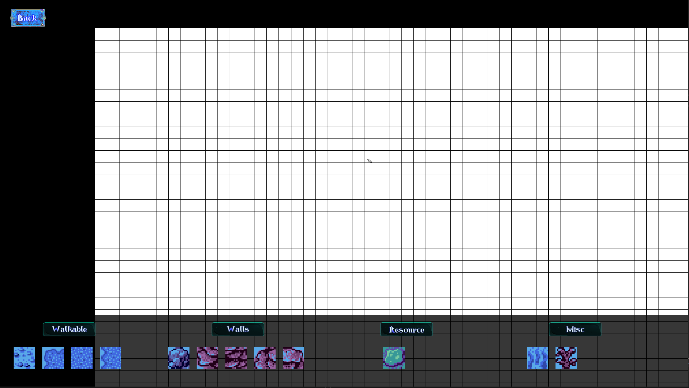

How does the level editor work
When opening a level editor you can see there are options at the bottom you can choose between 4 types and multiple options in them.
Walkables - where the units and buildings can go on
Walks - You can't place buildings and units can't go through them as well
Resource - Thats a tile you place to get resources from
Misc - This is more for decorations such as plants these behave same as "walkables" tiles
You can select one of the tiles and click and drag to place all at once, rotate a tile by pressing Q (left) or E (right). After you finish you can save this file by pressing num1 and enter your name for that file or overwrite it, if you would like to continue or make changes to that file, you can press num2 and load that file by entering the files name.